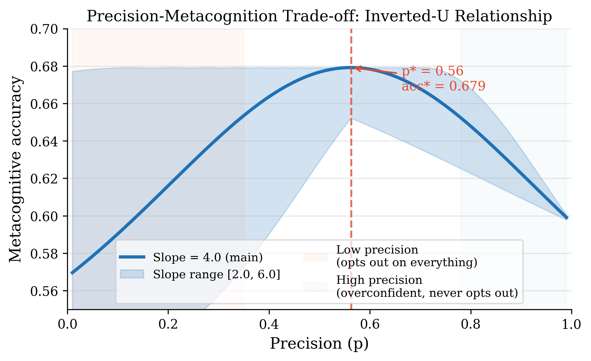
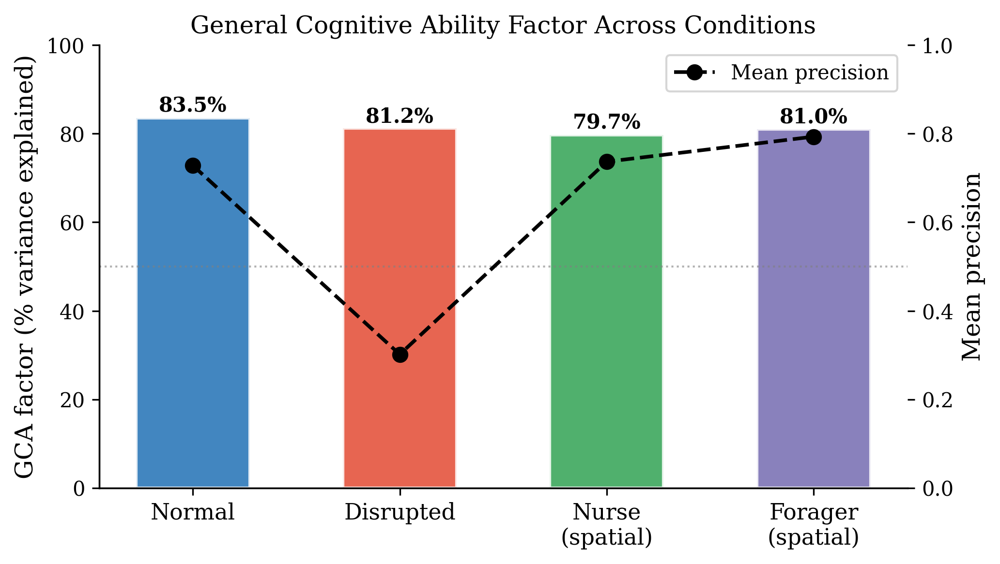
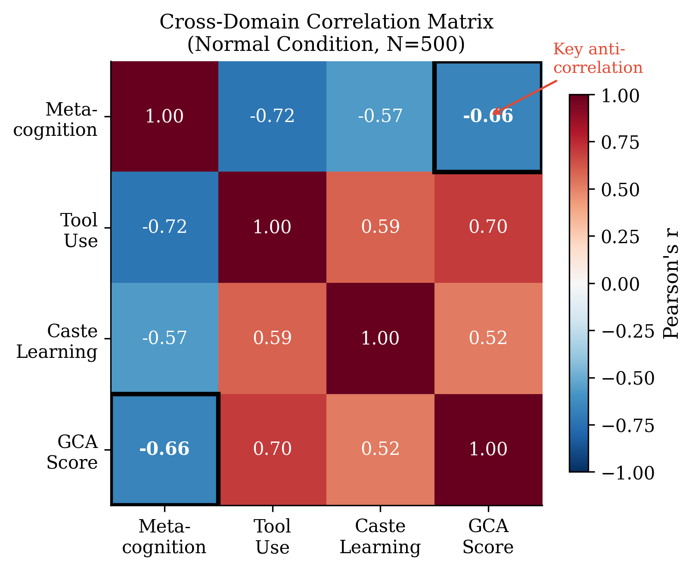
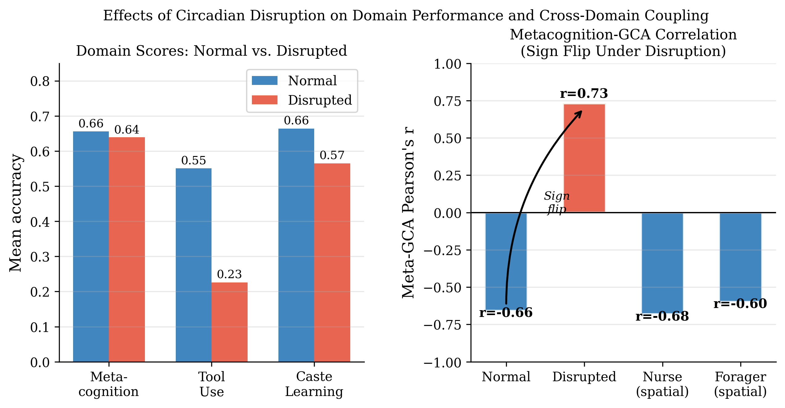

This page presents the core idea, results, workflow, and paper entry points for the ARIS-GCA-Bees project.
Bees exhibit multiple behavioral phenomena that resemble functional self-awareness, including metacognitive opt-out behavior, tool-use anticipation, caste-appropriate learning, and general cognitive ability. This project proposes a unified predictive coding account in which these domains are jointly regulated by a shared precision parameter instantiated in the central complex. The model predicts an inverted-U relationship between precision and metacognitive performance, a paradoxical negative association between metacognition and GCA under normal conditions, and a sign flip in this relationship under circadian disruption. The repository integrates idea generation, pilot simulations, full computational experiments, figure generation, and manuscript drafting into a single research pipeline.
The current Round-2 model produces four central findings that structure the paper and the repository.

Metacognitive performance peaks at intermediate precision, while both low and high precision reduce calibration quality.

Cross-domain performance is captured by a common factor structure, supporting the interpretation of a shared latent cognitive dimension.

Under normal conditions, higher general cognitive ability can paradoxically be associated with worse metacognitive calibration.

Circadian perturbation reorganizes the coupling structure and can reverse the direction of the metacognition–GCA relationship.
The repository follows a research-generation workflow from concept discovery to manuscript drafting.
Access the manuscript, code repository, workflow documentation, and bilingual paper pages.
The manuscript connects the theoretical model, analytical derivations, simulation outputs, and falsifiable empirical predictions into a single paper-ready narrative.
You may cite the repository using the BibTeX entry below before formal publication.
@misc{kang2026arisgcabees,
title = {ARIS-GCA-Bees: A Unified Predictive Coding Account of Functional Self-Awareness in Bees},
author = {Kang, Cunyi},
year = {2026},
note = {GitHub repository}
}